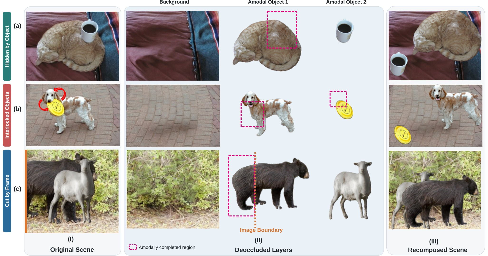
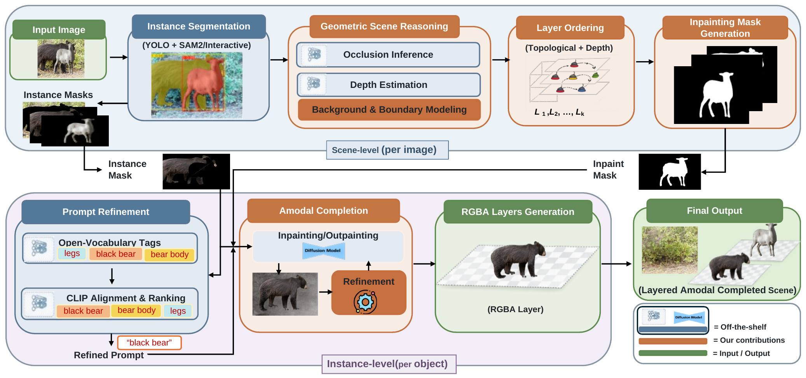

Abstract
Recovering the complete appearance of occluded objects from a single image is a fundamental problem for scene understanding and image editing. Real-world scenes are challenging due to clutter, complex spatial occlusions, and diverse object categories. Existing methods often struggle when occlusion involves background surfaces or objects that are not explicitly detected, and fail to resolve the cyclic occlusion dependencies that frequently occur in natural scenes.
We introduce a training-free, open-world scene deocclusion framework that recovers the full amodal appearance of detected or user-selected objects from a single RGB image, decomposing the scene into depth-ordered RGBA layers that are geometrically plausible, semantically faithful, and visually consistent with the visible scene. Extensive experiments show that our approach improves scene-level deocclusion, producing coherent and realistic reconstructions in real-world settings.
Method
The pipeline works in two stages. Scene-level reasoning runs once per image and decides what hides what. Instance-level completion then runs once per object and paints in what was hidden.

Our contribution Off-the-shelf model
-
Instance segmentation
YOLO boxes prompt SAM2 for precise masks. Users can also point at any object the detector misses.
-
Geometric scene reasoning
Pairwise occlusion and dense depth are combined. Depth-validated detection finds background occluders that segmentation misses, and objects cut by the frame are flagged for outpainting.
-
Cycle-safe layer ordering
Mutual-occlusion cycles are collapsed into strongly connected components, objects are grouped by their longest occlusion chain, and depth orders objects within each group.
-
Inpainting mask generation
Each object's mask covers every object that hides it, directly or indirectly, kept within depth-consistent reach of the occluded region.
-
Prompt refinement
Open-vocabulary tags are ranked against the object with CLIP to choose a precise text prompt.
-
Amodal completion
Diffusion in- and outpainting completes each object, repeating until boundary, colour, texture and plausibility scores pass. Each object is saved as an RGBA layer.
Interactive demo
Choose a scene and press Deocclude. Then rearrange the result: drag objects, change which one is in front, resize, flip or hide them. Completed regions stay consistent wherever an object goes.
Completed objects
Hover or tap a card to compare the visible part with the completed object.
Citation
The BibTeX entry will be added once the paper is published.